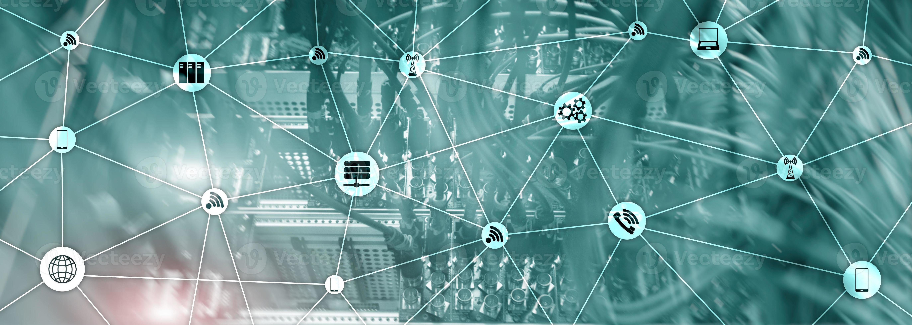

DEFINICIONES DE IOT:
1. Se refiere a la interconexión de dispositivos a través de Internet, permitiendo la comunicación y el intercambio de datos entre ellos. Los smartphones son ejemplos de dispositivos conectados a Internet que cuentan con sensores y capacidades de comunicación. El término "Internet de las Cosas" fue acuñado por Kevin Ashton en 1999, y desde entonces ha crecido el número de dispositivos conectados a la red.
2. Los dispositivos IoT, también conocidos como "objetos inteligentes", pueden variar desde simples dispositivos domésticos inteligentes, como termostatos inteligentes, hasta dispositivos portátiles, como relojes inteligentes y ropa con RFID, hasta complejas maquinaria industrial y sistemas de transporte. Los tecnólogos incluso están imaginando “ciudades inteligentes” enteras basadas en tecnologías IoT.
3. El funcionamiento de los sistemas de IoT tradicionales consiste en enviar, recibir y analizar los datos de forma permanente en un ciclo de retroalimentación. Según el tipo de tecnología de IoT, las personas o los sistemas de inteligencia artificial y aprendizaje automático (IA/ML) pueden analizar estos datos casi de inmediato o durante cierto tiempo.
4.tiene sus raíces en la idea de conectar dispositivos a Internet para permitir la comunicación y el intercambio de datos de forma remota. Los primeros conceptos sobre la creación de una red de dispositivos inteligentes se discutieron en 1982, cuando una máquina de Coca-Cola modificada se convirtió en el primer electrodoméstico conectado a Internet. Durante la década de los 90 se publicaron distintos artículos en el ámbito académico y el término Internet de las cosas se hizo popular en 1999.
- 1999: Kevin Ashton, del Instituto de Tecnología de Massachusetts (MIT), acuña el término "Internet de las Cosas" (IoT).
- 2008: La primera versión del protocolo IPv6 es estandarizada, lo que proporciona un gran número de direcciones IP para dispositivos IoT.
- 2010: El número de dispositivos conectados a Internet supera al número de personas en el mundo.
- 2014: Google adquiere Nest Labs, una empresa dedicada a dispositivos domésticos inteligentes, lo que marca un gran paso en la popularización del IoT en el hogar.
- 2016: La compañía de software estadounidense PTC adquiere la empresa de IoT ThingWorx por 112 millones de dólares, demostrando el crecimiento del mercado de IoT.
